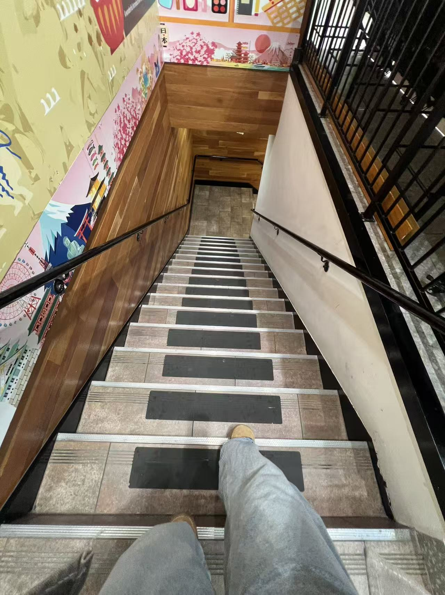
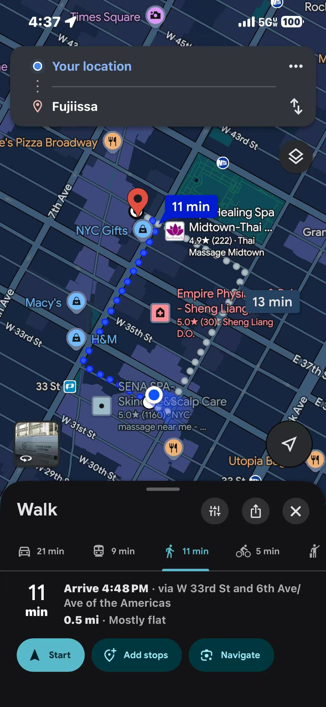
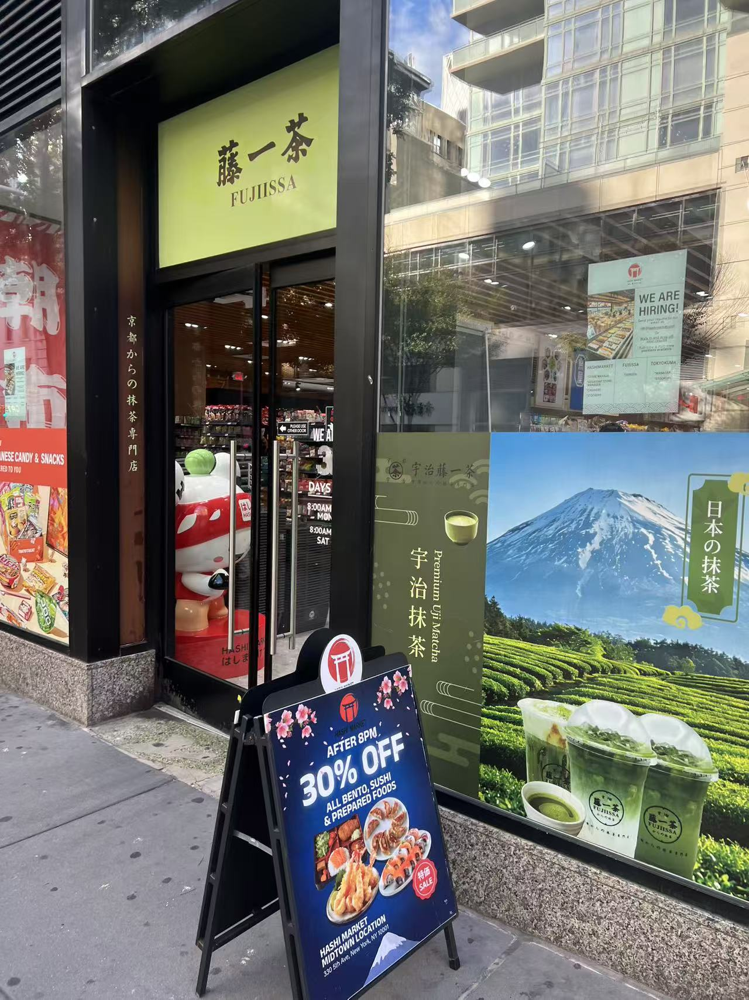
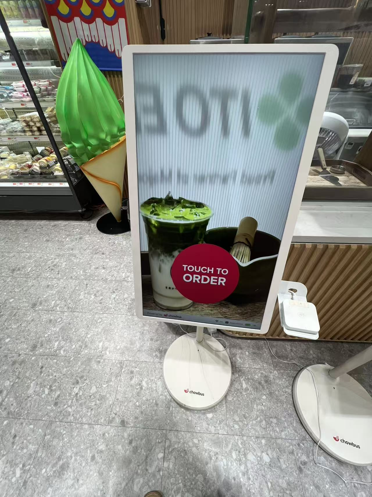
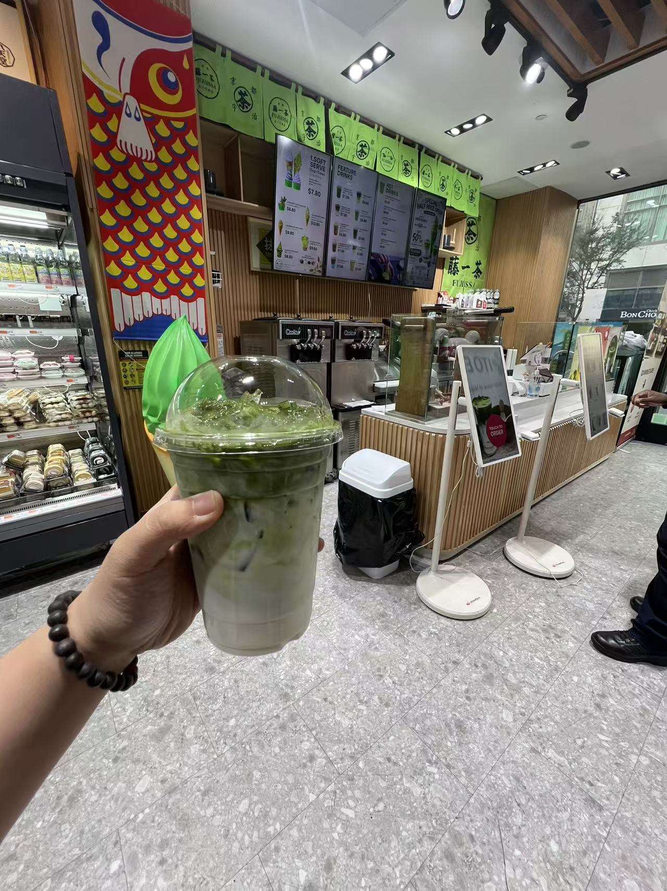
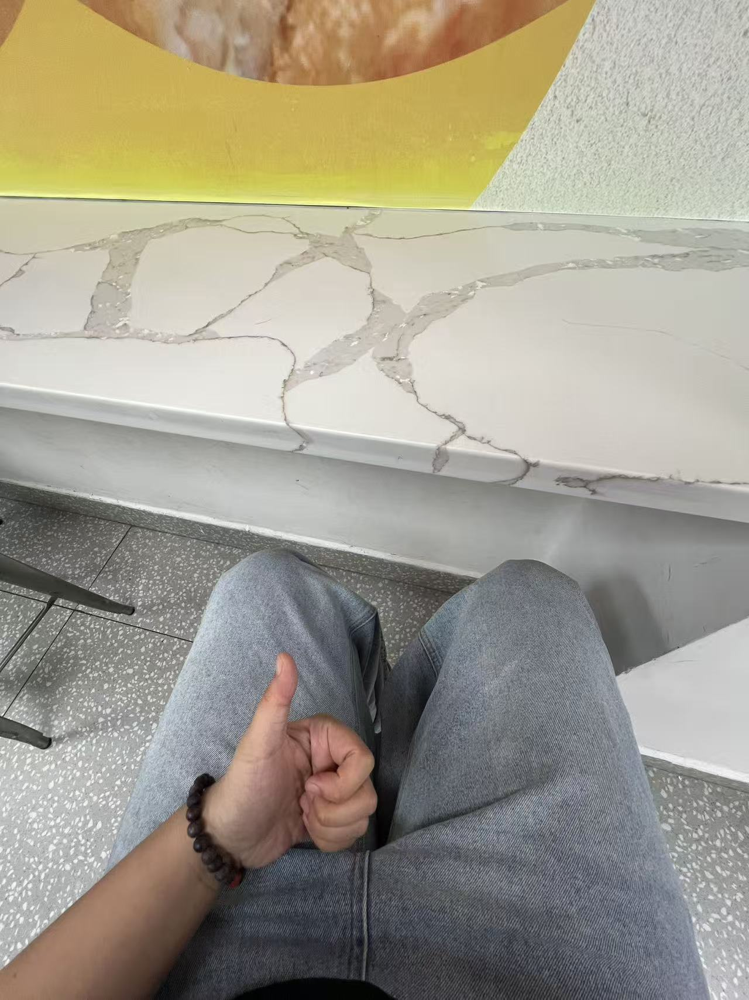
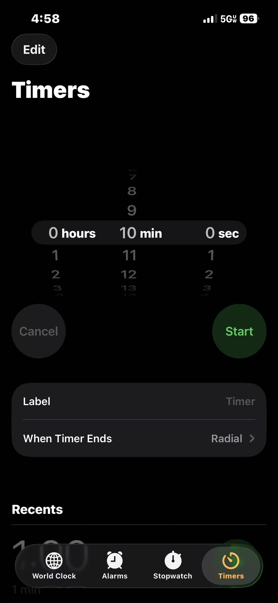
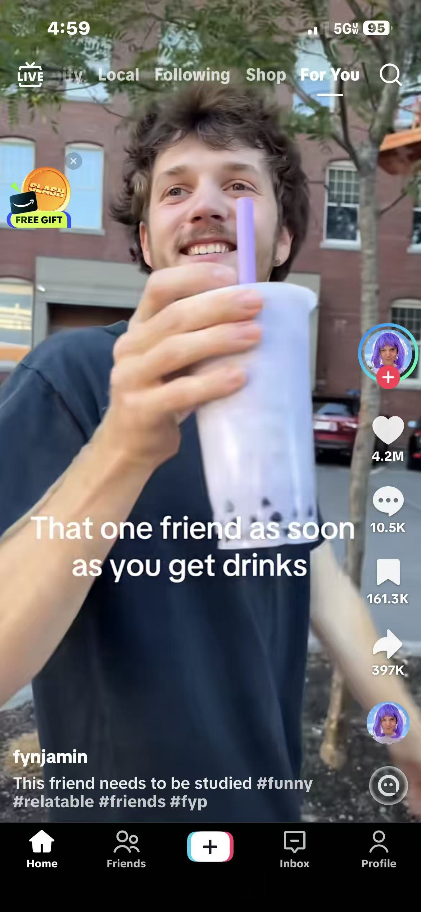

Welcome to Experiemntee 1's gallery of how she explored and took the message of the recipe. Due to her circumstances of being in her gap year, I thought including her experience was important to show that this recipe does not have to be restricted or just targetted towards people who are in school. This could be used during breaks at work...like what Isabella did for her take.







